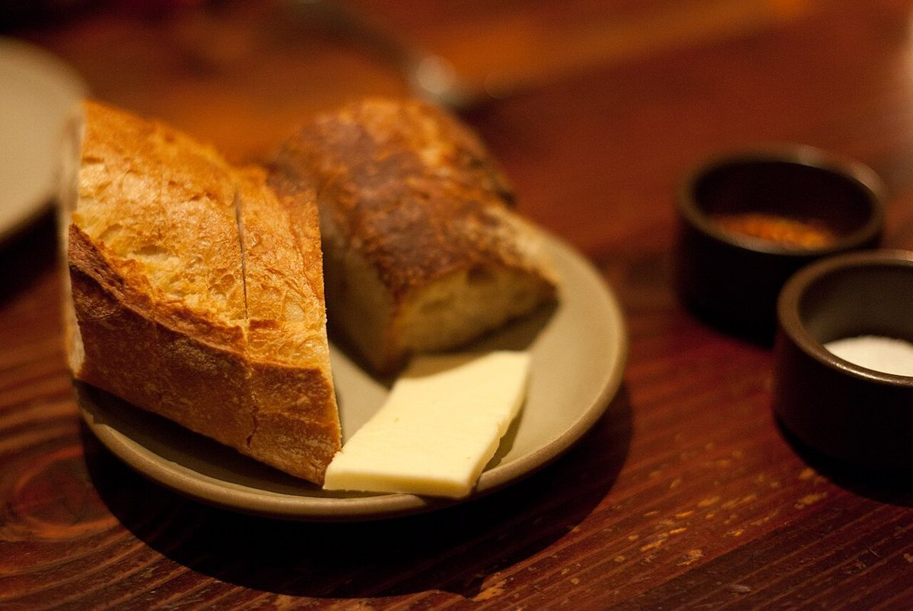
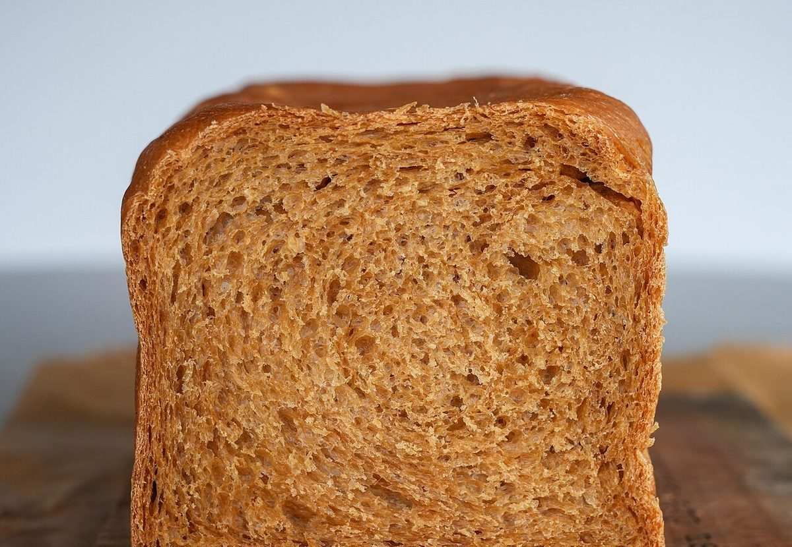

パン屋 / 山口県下関市
ハヤシパン
山口県下関市のパン屋「ハヤシパン」のご案内ページです。営業時間やメニューなど詳しいことは準備中。お問い合わせは電話か、Instagramから。

ハ

ヤ

シ
制作側の連想
三音を三枚の牌に
店名の由来は分かりません。制作側は「ハ・ヤ・シ」という三つの音を、ドミノの牌三枚に見立てて、ページの並びを作りました。一枚が傾くと次の一枚へ続く、その並びを、ページをめくる動きに重ねています。これは制作側の連想で、お店の理念・由来とは無関係です。
牌を並べてみる
パンの写真、六枚。
左が写真、右がさいころの目です。写真は国外・撮影地不明のフリー素材で、お店のものではありません。提供しているパンを示すものでもありません。
 いち
いち
に さん
さん
し ご
ご ろく
ろく
ご案内
お店のこと(確認できたものだけ)
| 所在地 | 〒750-0074 山口県下関市彦島本村町３丁目２−１ |
|---|---|
| 電話 | 083-242-4939 |
| 営業時間 | 準備中 |
| 定休日 | 準備中 |
| ご予約 | 準備中 |
| 駐車場 | 準備中 |
| SNS | Instagram @hp0128 |